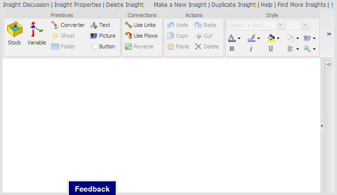

This chapter is intended to provide the reader with enough experience with the basic elements of the modeling environment such that they can construct simple balancing and reinforcing loops. Supporting aspects of the environment necessary to run these models will also be described. This will build on the elements presented in the previous chapters and is intended to be an introduction, not an exhaustive dissertation on modeling and simulation theory. The intent is to encourage the reader to develop and play with models, not chase them from the room screaming in fear never to return again.
Some might look on the blank canvas and hesitate not knowing where to start. You will be far better off if you look on the blank canvas as a gift of freedom which allows you to start anywhere. You will come to understand that if you approach modeling appropriately it won't matter where you start, you'll still end up with a meaningful model.
In the next few segments you will learn how to create on this canvas the two basic structures from which all models are constructed.
Notice in Figure 1 that similar tools are grouped on the \u{Toolbar} in Figure 1. Also only a portion of the \u{Toolbar} is displayed though it's enough for what will be covered in this section.

To use a tool you click on it on the \u{Toolbar} to select it, then you click on the canvas where you want it located, or used. For each tool there are a set of allowed uses. Once you place the item on the canvas it is named for what it is with that name selected so you can type in the name you want. Labels can be anything except braces "{}", brackets "[]", parentheses (), and quotes '. If the label is no selected you can double-click on it to select the label and then enter a new one, or you can enter the label in the \u{Configuration Panel} though we'll address that in a bit more detail later.
Practice placing \p{Stock} and \p{Variable} \p{Primitives} on the blank canvas in Figure 1 and naming them. You can remove a \p{Primitive} by selecting it and pressing the \u{Delete} key or clicking the \u{Delete} button in the \u{Actions} section of the \u{Toolbar}. Note that the \u{Save} option is disabled so you won't be able to save what you create. Note: This is only for the review copy. In the final copy you will be able to save what you create.
\p{Stocks} and \p{Variables} are connected using \p{Flows} and \p{Links} and there are very explicit rules associated with these connections. The allowed connections are depicted in Figure 2.
** Figure 2. Valid Primitive Connections
If \p{Use Links} or \p{Use Flows} is selected in the \u{Connections} segment of the \u{Toolbar} then when you mouse over an element of a model a little right pointing arrow shows up at the center of the element. You always draw a \p{Link} or a \p{flow} from one element to another and the arrow on the element points in the direction you draw the connection. If neither \p{Use Links} or \p{Use Flows} is selected then thee will be no right pointing arrow when you mouse over the element.
Click on the Set Up button on Figure 2, answer OK to both questions, and then repeatedly click Display to walk though a description of the valid connections between Stocks and Variables.
Hopefully the rules associated with the connections were easy to understand. Just remember that Flows represent the movement of stuff while Links only communicate the value of something from one location to another.
Go back to Figure 1 and recreate Figure 2 for yourself. Actually making the connections helps develop a level of familiarity which will server you well in the long run.
Figure 2 connection notes.
All the notes in the model have to go here for the printed version - Argh!!!